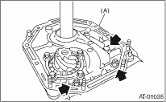
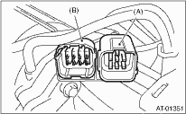
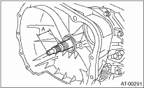

1. Secure the oil pump housing with two nuts and a bolt.
Tightening torque:
42 N·m (4.3 kgf-m, 31 ft-lb)

|
(A) |
Oil pump housing |
2. Install the converter case to the transmission case. 
3. Install the reduction driven gear.
4. Install the reduction drive gear.
5. Join the transmission case and the extension case.
6. Insert the inhibitor switch and transmission connector to the stay.

|
(A) |
Transmission harness ASSY |
|
(B) |
Inhibitor switch harness |
7. Install the ATF cooler pipe.
8. Install the oil charge pipe together with an O-ring.
9. Insert the input shaft while rotating it lightly by hand, and then check the amount of protrusion.
Normal protrusion A:
50 — 55 mm (1.97 — 2.17 in)

10. Install the torque converter clutch assembly.
11. Install the transmission assembly to the vehicle.